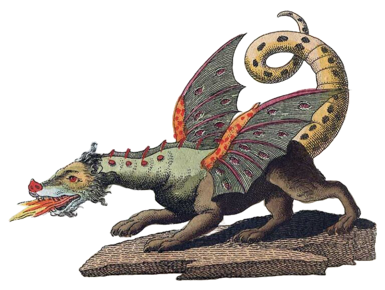
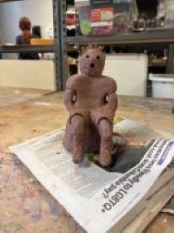
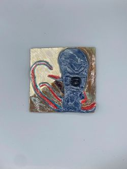
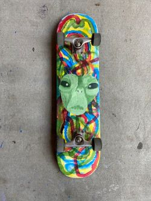
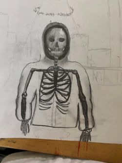
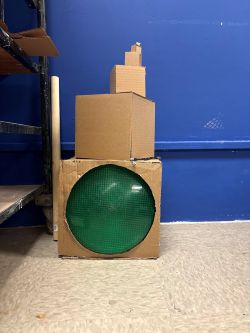

Ian Repik's Art

My name is Ian Repik. I am a student at USC and this is my art gallery. Most of the art on here was made in my Art 3D class and I would like to show it off!
Featured Art
Click an artwork to learn more about it.

Relics and Relief
Exploring Ancient Art! This Haniwa sculpture was inspired by the terracotta figures created in ancient Japan. I enjoyed learning how these figures were made and putting my own artistic style into the piece.

Squid Slab
Giant Squid! For this 3D art project, I created a clay slab showing a giant squid attacking a ship. I was inspired by sea-monster stories like 20,000 Leagues Under the Sea and wanted to make it feel like the ship was being pulled into the ocean. I built the squid in raised relief, adding suction-cup textures and flowing lines to create movement. After firing, I used blue, red, and dark brown glazes to bring the ocean, squid, and ship to life.

Alien Skateboard
Exploring Unknown Ideas! This skateboard painting was created for an AP Art project exploring people’s views on conspiracy theories and unknown ideas. I interviewed different people about what they believe could exist and used their ideas to inspire my artwork. For this piece, I asked a skater to imagine what an alien might look like and used their description to create the large green alien in the center. The artwork represents how imagination and personal perspectives can shape our understanding of the unknown.

Poster
Skeleton Poster! This was a small side project I made in my high school art club. Our task was to create a poster for a music artist, and I chose Yeat because of his futuristic, high-energy sound. I enjoyed designing the poster and using the bold style of his music as inspiration.

Alien Cat
Alien Cat! This painting was created last year as a fun project. My sister was taking a painting class and asked her teacher if I could join, and I ended up painting for a couple of days. This piece doesn’t have a deep meaning behind it, but I really enjoyed creating it and experimenting with painting. For only spending about two class days on it, I’m really happy with how it turned out.

Grain and Glow
Grain and Glow! This project explores the idea of using an iris aperture, similar to the aperture in a camera, to project a unique effect onto a surface. The concept worked during my experiments, but the effect wasn’t quite what I imagined, so I decided to rethink the idea. This piece is still in progress as I continue experimenting with light, projection, and different ways to create the effect I’m looking for.